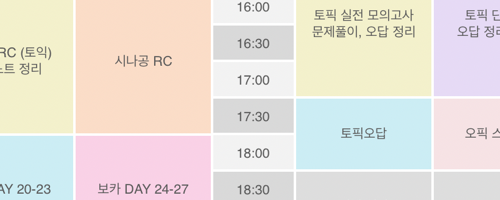

서울대학교 언론정보학과 미래뉴스실습 수업 홈페이지에 오신 것을 환영합니다. 미래뉴스실습 수업은 뉴스타파 제작진과 서울대학교 언론정보학과 교수진이 함께 만듭니다.
수업소개
식단을 감싸는 화려한 조명과 그 뒤 강건우
“‘코로나19’ 걸려도 책은 읽을 수 있겠지?”…닥쳐오는 삶이 감염보다 무서운 20대 강세린
코로나 19 시대, 학내 연극인들의 새로운 도전 권정연
 코로나보다 휴식이 더 불안한 그들, 대한민국 20대 송유채
거리로 내몰린 청춘, 코로나19 시대의 소공녀 여건학
우리들의 일그러진 학습권 정희수